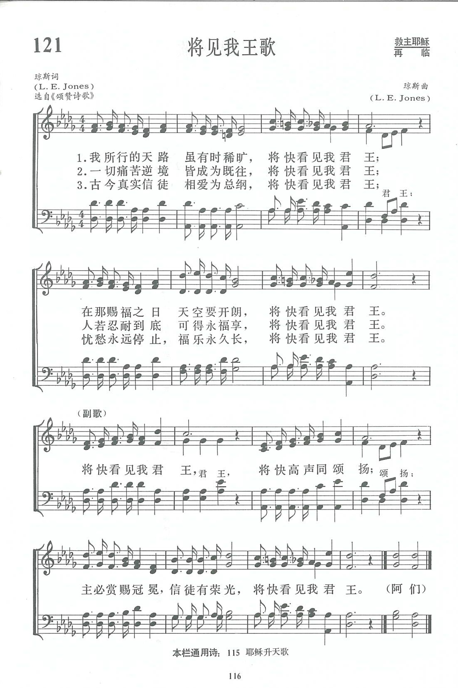

|
|
|
|
1 Tho' the way we journey may be often drear, Chorus: 2 After pain and anguish, after toil and care, 3 After foes are conquered, after battles won, 4 There with all the loved ones who have gone before, |
|
|
https://www.zanmeishige.com/tab/13794.html?songbook=1&index=121
 We Shall See the King Some Day
|
|
|
|
|


https://youtu.be/2lkzyLUCI_Q -
We Shall See The King Someday · Dallas Christian Adult Concert Choir
https://youtu.be/cNX8p9R7K1w
| Text: | We Shall See the King Some Day |
| Author: | L. E. J. |
| Tune: | [Tho' the way we journey may be often drear] |
| Composer: | L. E. Jones |
| Short Name: | Lewis E. Jones |
| Full Name: | Jones, Lewis E. (Lewis Edgar) 1865-1936 |
| Birth Year: | 1865 |
| Death Year: | 1936 |
Lewis Edgar Jones USA 1865-1936. Born in Yates City, IL, his family moved near Davenport, IA, where he lived on a farm until age 21. He went into business for awhile, and attended the Moody Bible Institute in Chicago. He was a classmate of evangelist, Billy Sunday. After graduating, he worked for the YMCA in Davenport, IA; Fort Worth, TX (1915, as general secretary); and Santa Barbara, CA (1925 as general secretary). Hymn writing was his avocation, and he wrote 200+, advising that many came from pastors’ sermons. He married Lora May Wright (1872-1950), and they had a daughter, Frances Ellen (1897-1982). He died in Santa Barbara, CA.
John Perry
Tune Information
| Title: | [Though the way we journey may be often drear] |
| Composer: | Lewis E. Jones (1906) |
| Meter: | 11.7.11.7 with refrain |
| Incipit: | 56543 55443 47676 |
| Key: | D♭ Major |
| Copyright: | Public Domain |
第121首 将见我王歌 WE SHALL SEE THE KING SOME DAY _L．E．Jones
经文：“看哪，他驾云降临，众目要看见他……”(启l：7)。
《将见我王歌》的歌词和曲调都是美国青年会工作者刘易士·琼斯所作。刘易士.琼斯(L．E．Jones，1865—1936),毕业于美国芝加哥慕迪圣经学校，多年从事基督教青年会工作，最后任加州圣巴巴拉(Santa Barbara)青年会总干事，直至1925年退休，业余从事谱写福音圣诗和配曲。
这首诗是一首进行曲。凡“古今真实信徒相爱为总纲”的，都坦然无惧地迈开大步坚定往前行，因为将要看见君王—再来的救主。巴不得人们都能过得胜的生活，儆醒等候，“主必赏赐冠冕”。
① 《新编》内有两位琼斯。请参阅作者索引。
http://www.qingdaochurch.com/newsa_detail.asp?AutoID=761
Words: Lewis Edgar Jones (b. Feb. 8, 1865; d. Sept. 1,
1936)
Music: Lewis Edgar Jones
Links:
Wordwise Hymns (Lewis
Jones)
The Cyber
Hymnal
Hymnary.org
Note: In the late nineteenth century, Lewis Jones was a student at Moody Bible Institute, in Chicago. Billy Sunday, the converted baseball player who became an evangelist, was a classmate of his. Though Sunday went on to a wider ministry, both men started out working for the Young Men’s Christian Association (the Y.M.C.A.). Lewis Jones continued that work for years, and was also the author of many gospel songs, including Power in the Blood, and the present selection.
Queen Elizabeth has been on the throne since 1952. Her Majesty has surpassed her great-great-grandmother, Queen Victoria, becoming the longest reigning British monarch in history. She has been a counselor to thirteen prime ministers of Great Britain, from Sir Winston Churchill on, and advisor to one hundred and sixty prime ministers serving in other parts of her realm.
Have you ever met her? Imagine being face to face with royalty. Likely some of us would be intimidated by such an encounter, and we’d tend to be tongue-tied, and afraid of doing something dumb and violating proper protocol.
Some years ago I became friends with a man who got very close to the queen on one memorable occasion. He had been a paratrooper and a radio man in the European conflict, during the Second World War. His stories of those days were fascinating. But he had another distinction. He was a member of the honour guard selected to meet Queen Elizabeth and Prince Philip at the airport, on one of their visits to Canada. Pretty exciting!
But the honour of serving the queen in that way, and of seeing her face to face, pales in comparison to the prospect of meeting Christ, the King of kings one day. He visited this earth once, long ago, presenting Himself as Israel’s King, but He was rejected. It was during the closing days when the Lord was on earth, when that presentation took place. It had been prophesied centuries before. Zechariah had said:
“Rejoice greatly, O daughter of Zion! Shout, O daughter of Jerusalem! Behold, your King is coming to you; He is just and having salvation, lowly and riding on a donkey, a colt, the foal of a donkey” (Zech. 9:9).
Those words were fulfilled by what is called Christ’s Triumphal Entry into Jerusalem. At that time:
“They brought the donkey and the colt, laid their clothes on them, and set Him on them. And a very great multitude spread their clothes on the road; others cut down branches from the trees and spread them on the road. Then the multitudes who went before and those who followed cried out, saying: ‘Hosanna to the Son of David [a title of the Messiah]! Blessed is He who comes in the name of the Lord!’” (Matt. 21:7-9). Even the children took up the chant, much to the anger of the Jewish leaders (vs. 15-16).
Sadly, this exaltation, though infinitely worthy of Him, was superficial for many in the crowd. A week later they were crying, “Crucify Him, crucify Him!” (Lk. 23:20-21). Hours after that, He died, nailed to a Roman gibbet. His body was buried in a borrowed tomb, but on the third day He rose again, and forty days later He ascended back into heaven once more, where He is seated at the right hand of God the Father.
But that is not the end of the story. Isaiah and others prophesy of His return and coming reign, a reign that will last forever (Isa. 9:6-7). Now, we wait, “until our Lord Jesus Christ’s appearing, which He will manifest in His own time, He who is the blessed and only Potentate, the King of kings and Lord of lords” (I Tim. 6:14-15). And in that day, all His blood-bought children will see the King in all His glory (Rev. 19:11-16).
That’s the theme taken up by Lewis Jones’s song. (The second line of the refrain in the 1906 original was: “We will shout and sing some day.” It wasn’t until a decade later that the version found in the Cyber Hymnal appeared.)
CH-1) Though the way we journey may be often drear,
We shall see the King some day;
On that blessèd morning clouds will disappear;
We shall see the King some day.
We shall see the King some day,
When the clouds have rolled away;
Gathered ’round the throne,
When He shall call His own,
We shall see the King some day.
CH-2) After pain and anguish, after toil and care,
We shall see the King some day;
Through the endless ages joy and blessing share,
We shall see the King some day.
Questions:
1) What are some appropriate things to do in the presence of an earthly
monarch?
2) What will our attitudes and actions be in the presence of Christ, the King of kings?
Links:
Wordwise Hymns (Lewis
Jones)
The Cyber
Hymnal
Hymnary.org
https://wordwisehymns.com/2016/10/31/we-shall-see-the-king-some-day/
"WE SHALL SEE THE KING SOME DAY" hymnstudiesblog
"Then we…shall be caught up together…to meet the Lord in the air; and so shall we ever be with the Lord" (1 Thes. 4.17)
INTRO.:
A song which looks forward to the time when we shall be caught up to meet the Lord in the air is "We Shall See the King Some Day" (#532 in Hymns for Worship Revised, #6 in Sacred Selections for the Church). The text was written and the tune (Jones) was composed both by Lewis Edgar Jones (1865-1936). The song was produced in 1906 when Jones was general secretary for the YMCA in Ft. Worth, TX. He sold the manuscript to Charles H. Gabriel, who published it in his 1907 hymnbook Praise and Service. The copyright was originally owned by Edwin O. Excell, but after it was renewed in 1934, it was owned by the Lillenas Publishing Co. Jones is perhaps best remembered as the author and composer of "There’s Power in the Blood."
Among hymnbooks published by members of the Lord’s church during the twentieth century for use in churches of Christ, "We Shall See the King Some Day" appeared in the 1921 Great Songs of the Church (No. 1) and the 1937 Great Songs of the Church No. 2 both edited by E. L. Jorgenson; the 1935 Christian Hymns (No. 1), the 1948 Christian Hymns No. 2, and the 1966 Christian Hymns No. 3 all edited by L. O. Sanderson; the 1959 Majestic Hymnal No. 2 and the 1978 Hymns of Praise both edited by Reuel Lemmons; the 1963 Abiding Hymns edited by Robert C. Welch; and the 1963 Christian Hymnal edited by J. Nelson Slater. Today it may be found in the 1971 Songs of the Church edited by Alton H. Howard; the 1978/1983 (Church) Gospel Songs and Hymns edited by V. E. Howard; and the 1992 Praise for the Lord edited by John P. Wiegand; in addition to Hymns for Worship, Sacred Selections, and the 2007 Sacred Songs of the Church edited by William D. Jeffcoat.
The song is a joyful expression of our hope of seeing Christ and being with Him forever.
I. The first stanza emphasizes the time when we receive our hope
"Though the way we journey may be often drear, We shall see the King some day;
On that blessed morning clouds will disappear: We shall see the King some day."
A. Our physical lives on earth are often pictured as a journey in which we
travel a path that leads to a goal: Matt. 7.13-14
B. Sometimes the way we journey may be drear because man who is born of woman
is of few days and full of sorrow: Job 14.1
C. However, there will come a day when the clouds, representing all the sorrows
of this life, will disappear because Christ will return and raise us up to be
with Him: Jn. 5.28-29
II. The second stanza emphasizes the contrast of this life with our hope
"After pain and anguish, after toil and care, We shall see the King some day;
Through the endless ages joy and blessing share: We shall see the King some
day."
A. In this life, we often suffer pain and anguish: Rom. 8.22
B. Also, in this life we must have our share of toil and care: 1 Pet. 5.7
C. However, the Christian can look forward to sharing joy and blessing through
the endless ages because God gives us the promise of eternal life: 1 Jn. 2.25
III. The third stanza emphasizes the victory involved in our hope
"After foes are conquered, after battles won, We shall see the King some day;
After strife is over, after set of sun, We shall see the King some day."
A. Our journey on this earth will be filled with strife as we seek to fight the
good fight of the faith: 1 Tim. 6.12
B. However, we can have victory over the world through our faith: 1 Jn. 5.4
C. Then, we can focus our minds upon the final victory that God will give us
when the Lord returns: 1 Cor. 15.50-57
IV. The fourth stanza emphasizes the blessings that we shall receive from our
hope
"There with all the loved ones who have gone before, We shall see the King some
day;
Sorrow past forever, on that peaceful shore, We shall see the King some day."
A. This stanza, included in almost all of our books, was omitted by Ellis J.
Crum in Sacred
Selections, probably because it contains a reference to "all the loved ones
who have gone before" being in heaven, and Lillenas Publishing Co., which held
the copyright at the time, would not let him change it to "saved ones" as he did
in so many other songs. The fact is that I know that I shall be reunited with
the redeemed of all ages: Matt. 8.11. Among those will surely be some of my
loved ones who were in Christ, and all the saints will be my "loved ones" in the
Lord
B. Sorrow will be passed forever: Rev. 21.4
C. And we shall dwell with the redeeemed of all ages on the peaceful shore of
the river of life: Rev. 22.1-5
CONCL.:
The chorus reminds us that the center of our hope is that of seeing Jesus
Christ:
"We shall see the King some day, We will shout and sing some day;
Gathered round the throne When He shall call His own, We shall see the King some
day."
In our lives here on earth, we walk by faith and not by sight, so there are many
things which pertain God and our relationship to Him that we cannot see with our
physical eyes. However, God has promised us that when this life is over, if we
have truly lived by faith, "We Shall See the King Some Day."
https://hymnstudiesblog.wordpress.com/2008/11/25/quotwe-shall-see-the-king-some-dayquot/